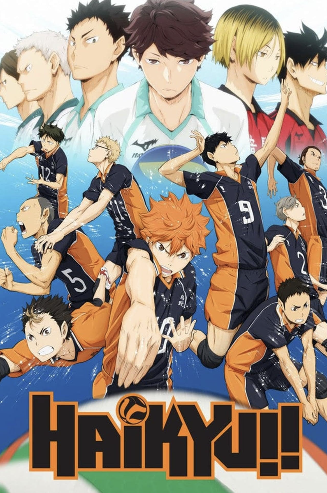
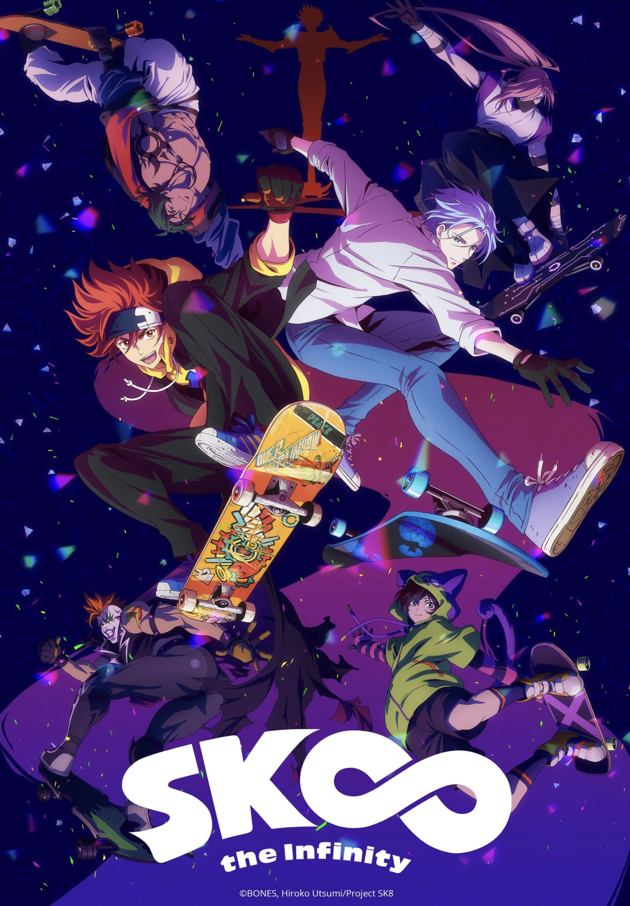
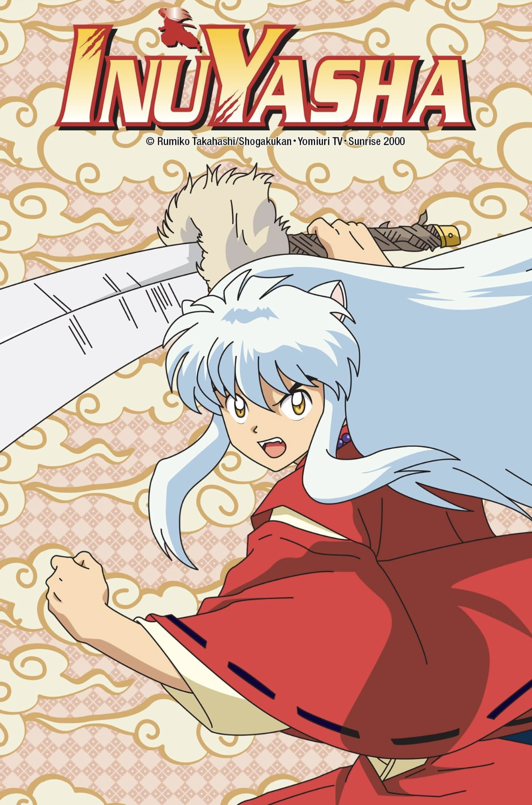
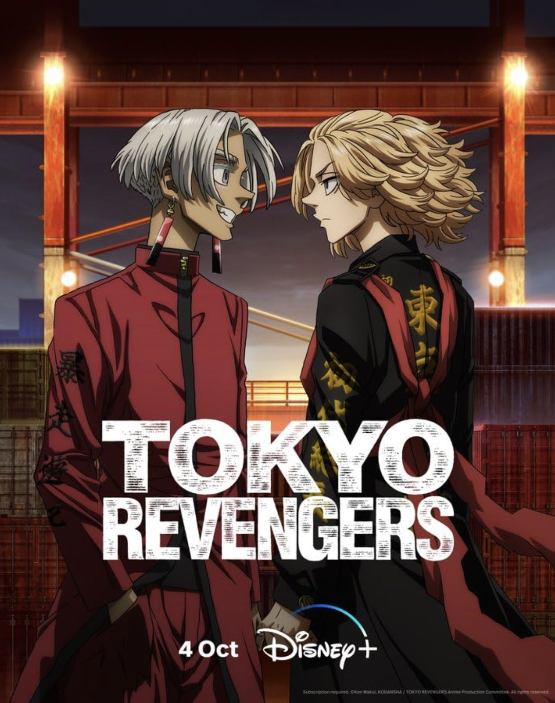

Assassination Classroom is about this school that ranks their students based on their
performance. The E-Class kids get this yellow-octopus teacher that moves at Mach 20 and
they have to kill him by the end of the year. I got really emotional with this anime, even
if it was comedic and light-hearted for the most part. Their teacher actually teaches them
well and gets their grades up. He also helps them become better people / think better of
themselves. I love everyone's character development and I liked the ending. I'd definitely
rewatch this if I had more time. The relationship between Class-E and Koro-sensei is really
sweet.

I don't even play volleyball and I LOVE Haikyuu. I've rewatched this anime so many
times and I love everything about it. It's a pretty basic sports anime in the sense that
it celebrates teamwork, has training arcs, and slice of life difficulties for the characters.
I like how it doesn't just focus on the protagonists, and gives every character feelings,
like the seniors who know that their freshmen are better players than them but still want
to play because it might be their last chance to in high school. I appreciated this anime
more when I became part of Alianti, because I related more to it.

Sk8 The Infinity is the first skateboarding anime/show I've ever seen. I really enjoyed
all the episodes they're all very light-hearted, and the characters go through getting
better at their craft together. I rewatch this a lot because it's a pretty short anime.
I like how Reki and Langa, the two protagonists deal with their emotions because their
friendship is realistic (as someone their age).

I used to watch Inuyasha Tagalog Dub on my TV when I was around 5 years old. I
rewatched it again recently because I wanted to appreciate it more. I like the world-building
in this anime. The storyline is pretty slow, so I needed a LOT of time to complete it. It
also gets kinda repetitive because most of it is just Inuyasha coming to save the day,
but I still like all the characters in this anime.

Tokyo Revengers is an anime that follows this guy who traveled back into his teenage self's
body with the original goal of saving his highschool girlfriend who died. He gets roped into
a gang, and it quickly becomes his goal to save his friends in the gangs he gets involved in.
The pacing isn't my favorite, but I like the writing and love all the characters and
their backstories.